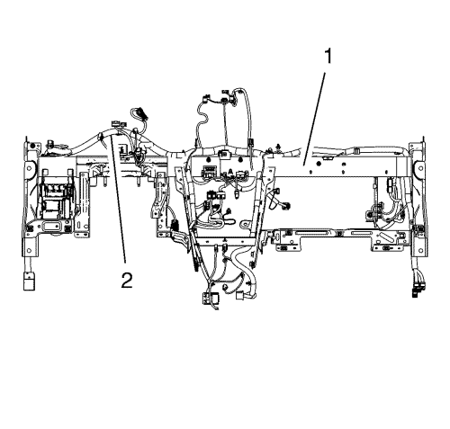

Sustitución del mazo de cables del panel de instrumentos
Procedimiento de desmontaje
Nota: Disponga de un lugar para colocar las piezas retiradas.
- Monte el MDI, conecte la alimentación y lea los códigos de diagnóstico.
| 1.1. | Borre todos los códigos de diagnóstico y vuelva a leerlos. |
| 1.2. | Anote TODOS los códigos de diagnóstico. |
- Abra el capó y desconecte el cable negativo de la batería. Consultar Desconexión y conexión del cable de batería negativo .
- Desmonte el conjunto del panel de instrumentos. Consultar Sustitución del conjunto del panel de instrumentos .
- Extraiga el módulo de control de la carrocería (BCM). Consultar Sustitución del módulo electrónico de la carrocería .
- Suelte todos los cables de masa de la barra de acoplamiento y los pernos de soldadura de la carrocería.
- Suelte el mazo de cables del tablero de instrumentos. Dibuje los puntos de fijación y la disposición del mazo de cables del tablero de instrumentos para orientarse.
- Desconecte todos los conectores eléctricos y desatornille los cables de masa.
| 7.1. | Suelte todas las fijaciones. |
| 7.2. | Preste especial atención a los ruidos y tableteos de las correas del cable y la guía del mazo de cables deterioradas. |

- Retire el mazo de cables del panel de instrumentos (2) de la barra de acoplamiento del panel de instrumentos (1) y déjela en el suelo. Saque el nuevo mazo de cables del tablero de instrumentos y compárelo con el antiguo para comprobar la cantidad de puntos de fijación, correas de cable, guías, números de pieza y asignaciones de perno.
Procedimiento de montaje
- Tras comparar el mazo de cables nuevo con el antiguo (2), móntelo en la barra de acoplamiento (1).
| • | Asegúrese de que no hay cables doblados ni retorcidos y sujete el nuevo mazo de cables. |
| • | Utilice correas de cable y pernos nuevos. Enchufe todos los conectores eléctricos. |
| • | Preste especial atención a la pieza contraria correcta y a la asignación de pernos. |
| • | Utilices las imágenes para orientarse. |
Precaución: Consulte Precaución con las fijaciones en la sección Prólogo.
- Apriete todos los cables de masa a los pernos de soldadura con 9 N·M (80 lib. pulg.).
- Monte el módulo de control de la carrocería. Consultar Sustitución del módulo electrónico de la carrocería .
- Monte el conjunto del tablero de instrumentos. Consultar Sustitución del conjunto del panel de instrumentos .
- Conecte el cable negativo de la batería. Consultar Desconexión y conexión del cable de batería negativo .
- Cierre el capó.
- Monte el MDI, conecte la alimentación y lea los códigos de diagnóstico. Borre todos los códigos de diagnóstico y vuelva a leerlos.
- Compruebe todas las funciones eléctricas y lleve a cabo una prueba de conducción.
| © Copyright Chevrolet. All rights reserved |